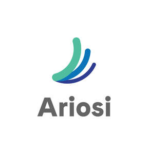

Trade Mark Journal No.2025/013 28 March 2025
UK00004171339 10 March 2025 (9,35,36,41,42)

- Class 9
- Recorded and downloadable media, computer software, blank digital or analogue recording and storage media; computer software; data and file management and database software; databases; downloadable and recorded content; downloadable electronic publications; downloadable electronic reports; electronic publications; media content; downloadable computer software for creating searchable databases of information and data; downloadable computer software for use in database management; downloadable software in the field of temporary accommodation; downloadable cloud-based software for storing and managing electronic data; downloadable electronic publications in the nature of books, magazines, brochures, newsletters, reports featuring information for the serviced apartment industry; downloadable electronic publications in the nature of books, magazines, brochures, newsletters, reports in the field of hospitality; downloadable software for use in listing, searching and booking temporary accommodation; downloadable software for use in database management for the serviced apartment industry; downloadable software for use in database management in the field of hospitality; downloadable software for providing accommodation solutions; parts and fittings for all the aforesaid goods.
- Class 35
- Business consulting; business advisory services relating to company performance; business analysis and information services, and market research; business consultancy and advisory services; business management consultancy in the field of executive and leadership development; collection of information relating to market analysis; consultancy relating to business planning; management of business projects [for others]; market research consultancy; providing business efficiency advice; analysis of market research data and statistics; assistance, advisory services and consultancy with regard to business analysis; assistance, advisory services and consultancy with regard to business management; assistance, advisory services and consultancy with regard to business planning; business management consulting with relation to strategy, marketing, sales, operation, product design particularly specializing in the use of analytic and statistic models for the understanding and predicting of consumers, businesses, and market trends and actions; business monitoring and consulting services, namely, tracking web sites and applications of others to provide strategy, insight, marketing, sales, operation, product design, particularly specializing in the use of analytic and statistic models for the understanding and predicting of consumers, businesses, and market trends and actions; business project management services; business consulting, management, and planning services for the serviced apartment industry; business consulting, management, and planning services in the field of hospitality; business management consulting and advisory services; business project management services; cost price analysis; dissemination of advertising, scheduling and managing of training courses and programs for others via a global computer network; market research and analysis services; market research consultation; planning, development, maintenance, tracking and reporting of online marketing activities for third parties; preparation of market analysis reports; preparing business reports; providing organizational effectiveness consulting in the field of team building; real estate marketing services in the field of serviced apartments; real estate marketing analysis; statistical analysis and reporting services for business purposes; information, advisory and consultancy services relating to the aforesaid.
- Class 36
- Consultation services relating to real estate; financial information, data, advice and consultancy services; corporate real estate advisory services; apartment locating services for others; financial data analysis; providing information in the field of real estate; providing real estate listings and real estate information via the internet; providing financial information; real estate consultancy; real estate listing; real estate management consultation; information, advisory and consultancy services relating to the aforesaid.
- Class 41
- Education; Providing of training; business training; arranging and conducting of training courses; arranging and conducting of training workshops; business mentoring services; coaching services; conducting workshops [training]; education and instruction services; educational services in the nature of coaching; organising of team activities and exercises; providing electronic publications; providing non-downloadable electronic publications; provision of downloadable electronic publications for temporary offline use; provision of training courses; publishing, reporting, and writing of texts; special event planning; team building (education); training courses; training in the field of real estate management; education services, namely, providing mentoring, tutoring, classes, seminars and workshops in the field of hospitality; leadership development training for the serviced apartment industry; leadership development training in the field of hospitality; life coaching services for the serviced apartment industry; life coaching services in the field of hospitality; non-downloadable electronic publications in the nature of books, magazines, brochures, newsletters, reports featuring information for the serviced apartment industry; non-downloadable electronic publications in the nature of books, magazines, brochures, newsletters, reports in the field of hospitality; personal coaching services for the serviced apartment industry; personal coaching services in the field of hospitality; providing group training in the field of organizational effectiveness featuring team building activities; providing on-line training courses, seminars, workshops for the serviced apartment industry; providing on-line training courses, seminars, workshops in the field of hospitality; providing online non-downloadable electronic publications for the serviced apartment industry; providing online non-downloadable electronic publications in the nature of books, magazines, brochures, newsletters, reports in the field of hospitality; provision of information relating to publishing of electronic publications; publishing of electronic publications; virtual personal coaching services for the serviced apartment industry; virtual personal coaching services in the field of hospitality; information, advisory and consultancy services relating to the aforesaid.
- Class 42
- Computer software design and development; hosting services, software as a service, and rental of software; platform as a Service [PaaS]; software as a service; software as a service [SAAS] services; providing non-downloadable software in the field of temporary accommodation; platform as a service (PAAS) featuring computer software platforms for providing accommodation solutions; platform as a service (PAAS) featuring computer software platforms for use in listing, searching and booking temporary accommodation; platform as a service (PAAS) featuring computer software platforms for use in database management for the serviced apartment industry; platform as a service (PAAS) featuring computer software platforms for use in database management in the field of hospitality; providing online non-downloadable computer software platforms for database management; providing non-downloadable software for providing accommodation solutions; providing non-downloadable software for use in database management in the field of hospitality; software as a service (SAAS) services featuring software for use in listing, searching and booking temporary accommodation; software as a service (SAAS) services featuring software for use in database management for the serviced apartment industry; software as a service (SAAS) services featuring software for use in database management in the field of hospitality; software as a service (SAAS) services featuring software for providing accommodation solutions; providing non-downloadable software for use in listing, searching and booking temporary accommodation; providing non-downloadable software for use in database management for the serviced apartment industry; information, advisory and consultancy services relating to the aforesaid.
Habicus Group Limited
Representative: Stobbs